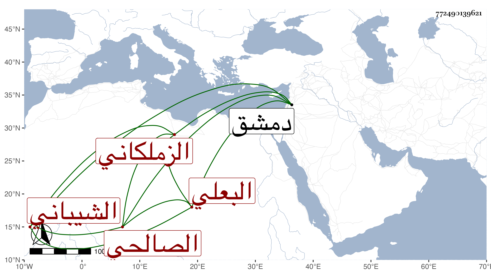

0902Sakhawi.DawLamic.ITO20230111-ara1.EIS1600.772490139621
Biography ID: 772490139621
أحمد بن النجم سليمان بن محمد بن سليمان بن مروان بن علي بن منجاب بن حمايل الزملكاني الشيباني البعلي ثم الصالحي . أحد رواة الصحيح عن الحجار وسمع أيضا من غيره وله إجازة من أبي بكر بن محمد بن عنتر وغيره ، وحدث سمع عليه الياسوفي وغيره . مات في ذي الحجة سنة إحدى ، قاله شيخنا في أنبائه ، وذكره المقريزي في عقوده وأنه أجاز له التقي بن تيمية وغيره وأنه مات في دمشق وقد جاز الثمانين .
